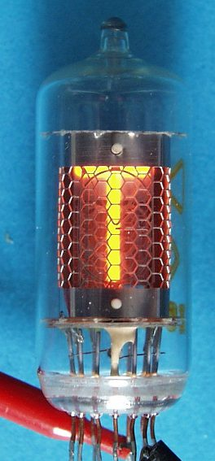
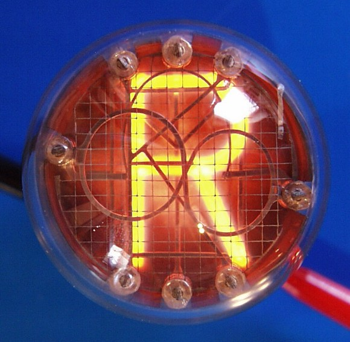
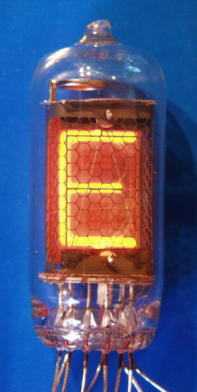
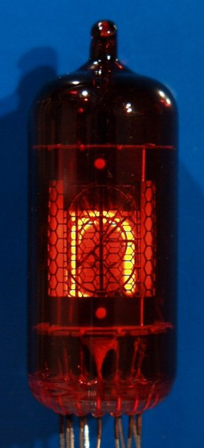
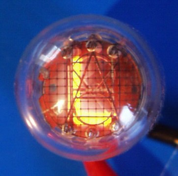
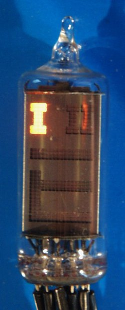

last modified:23 October 2026
Nixie tubes are awesome
Here I share information about Nixie tubes.
Where to start, I have so much to say about Nixie tubes.
First, what are they ? Nixie tubes are a type of vacuum tube display that use a heated filament to emit electrons, which then strike a gas-filled tube to produce light. Usually, the gas is neon, which produces a beautiful orange glow.
Here are some images so you can see how cool they are:






The image are from : Dieter's Nixie World and as you can see I wrote Treneelie with the images hihi.
They were invented in the 1950s in united states and were widely used in the 1960s and 1970s. Most of the Nixie tubes that can be found come primarily from the USSR, as they were produced in large quantities there.
They are now considered obsolete and are no longer manufactured, but the company Dalibor Farny still make them as a luxury item.
I discovered Nixie tubes in a physics experiment where they were used to display the voltmeter digits. It is not surprising because they were mainly used for the display of numerical information in technical equipment
On my blog you can see that I buid a nixie clock with IN-12a tubes.